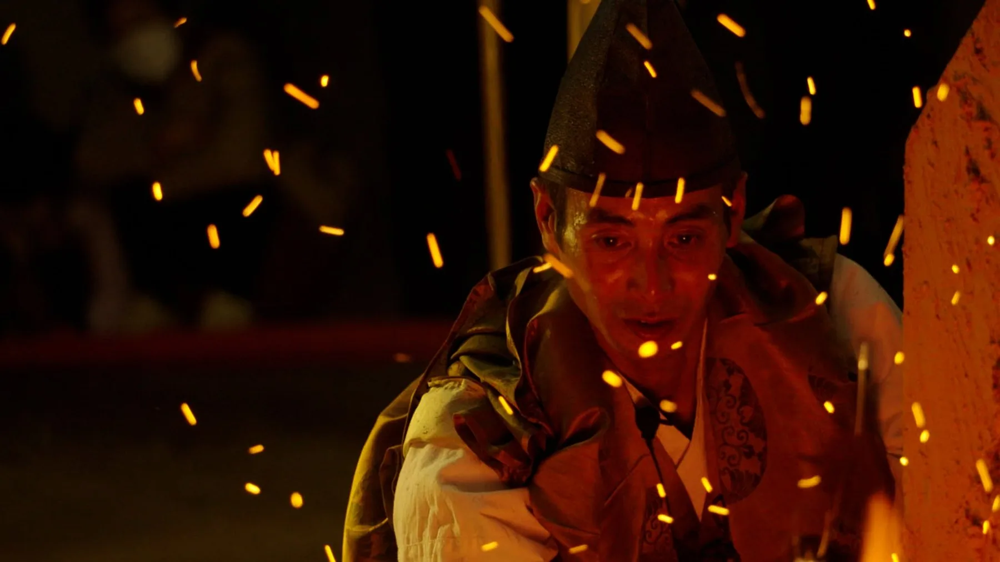
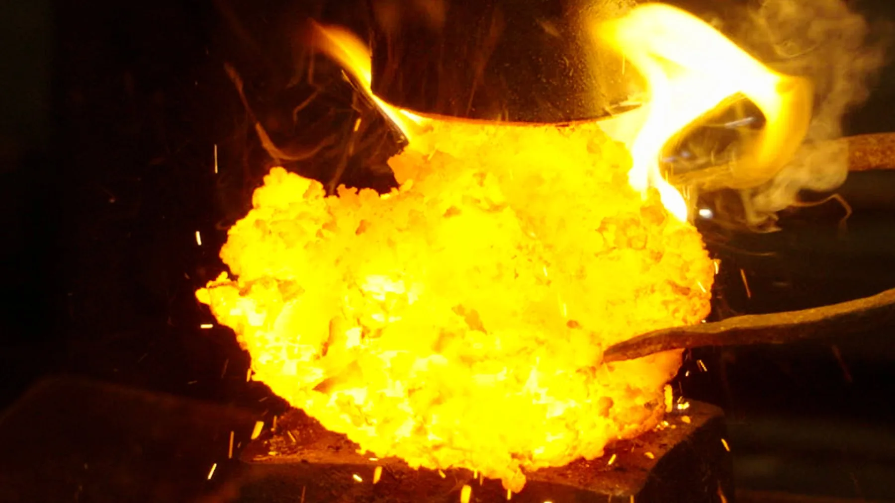
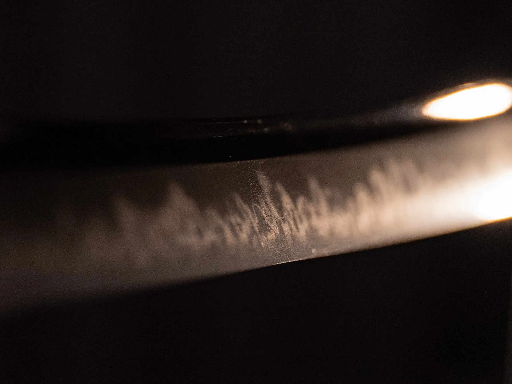
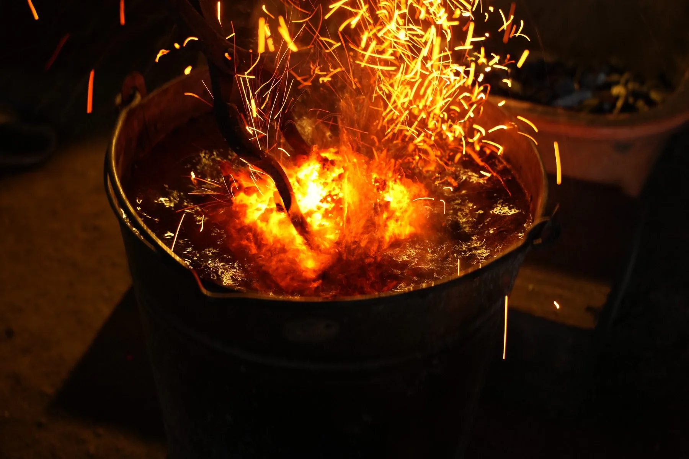
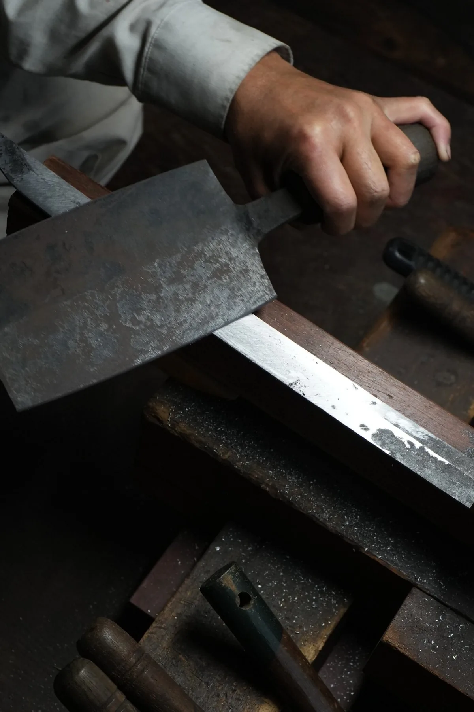
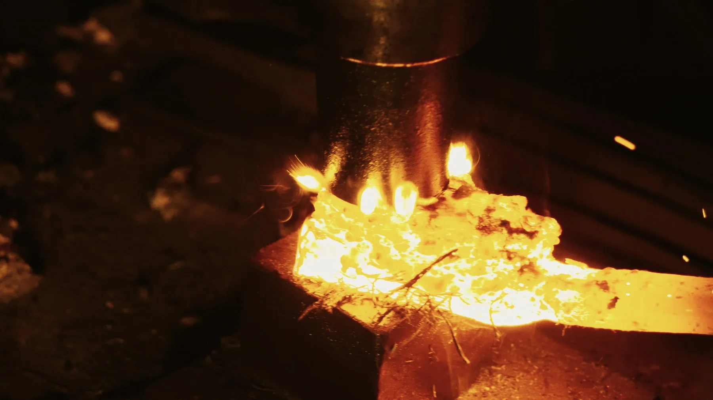
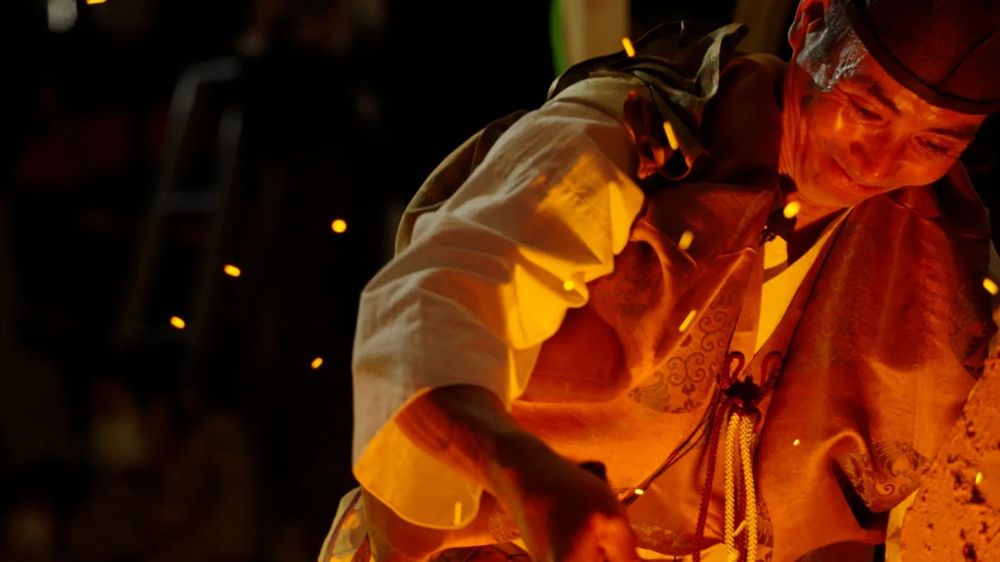
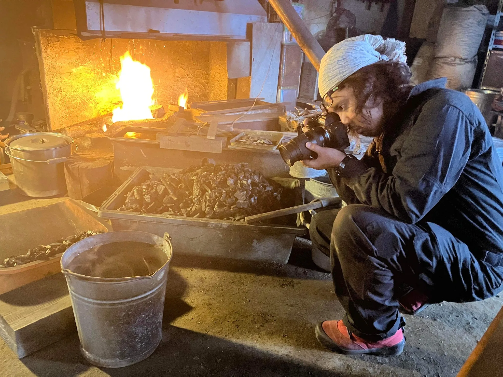

Forging a Prayer
Bizen Osafune, the historic heart of Japanese swordmaking. A sacred forging ritual, held for the first time in a century.
A documentary following a year of creating a sword to be offered at a shrine.
Bizen Osafune, a historic center of Japanese swordmaking.
A sacred forging ritual held for the first time in a century.
A year of creating a sword as a sacred offering began that day.
Thoughts, prayers, and a human spirit poured into a sword that might become a vessel for the divine.
Through the words of a swordsmith who says “A sword is not a weapon,” the film re-examines the spirit and compassion that Japan may have begun to forget.
Gallery
Fire, iron, water, and people.
An intimate view of the time and care involved in forging a sword.







Kazuki Kawashima
Kazuki Kawashima
Born in Aki, Kochi Prefecture, Japan, in 1970.
After graduating from high school, he trained in Seki, Gifu Prefecture, and studied the Bizen tradition.
He established his workshop in Bizen Osafune and continues to create swords influenced by the flamboyant Bizen style of the Fukuoka Ichimonji school, which flourished from the Kamakura into the Nanbokucho period.
Believing that “a sword is not a weapon,” he seeks to make protective swords that resonate with the hearts of the people who carry them.

Yuki Nishiyama
Yuki Nishiyama
Born in Ako District, Hyogo Prefecture, Japan, in 1981.
After working as a composer and arranger, he expanded into filmmaking, cinematography, and drone work.
He released his directorial debut, Minna: A Boat for Everyone, in 2025.
He directed, edited, and composed music for Forging a Prayer – Voice of the KATANA.
Trailer
Forging a Prayer – Voice of the KATANA trailer
Screening and film festival information will be announced as it becomes available.